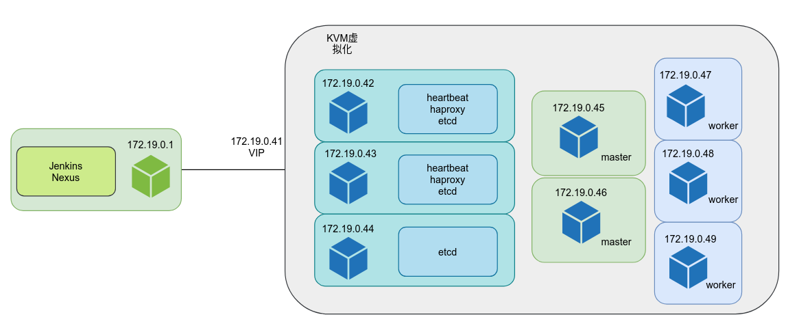
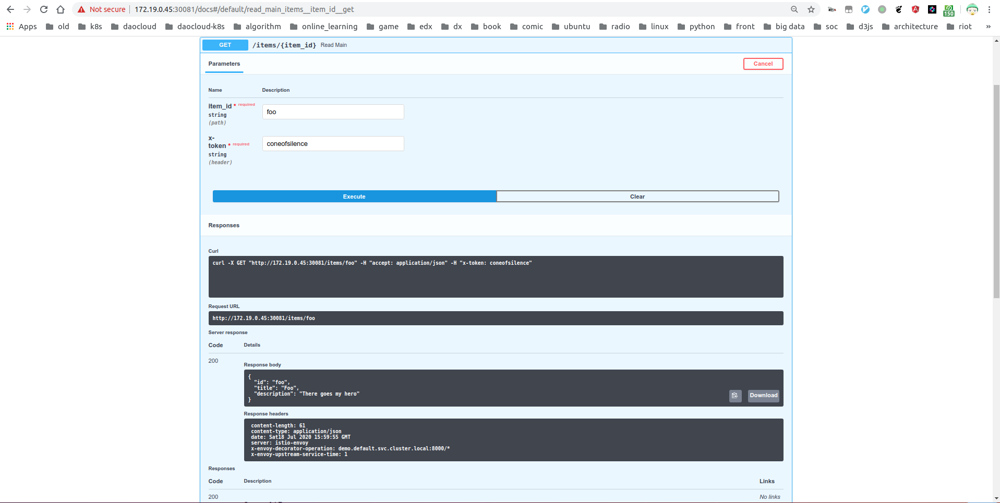

私有云DevOps持续构建系统的搭建
-- thoughtworks devops面试题解答
author: 孟繁超(dameng/Makefile君)
copyright： 版权所有，如需转载请联系pingf0@gmail.com
背景:
thoughtworks的DevOps的面试题目中的核心要求如下(细节的话暂不方便透露):
- 提供一个给开发使用的环境
- 搭建一个CI/CD环境构建相关的制品
- 通过CI/CD将开发代码部署到相应的环境上
思路分析:
其中涉及到两块环境的搭建，一个是搭建运行时环境，一个是构建CI/CD系统。同时其也隐性的要求了，编写demo代码，通过CI/CD系统部署到搭建的运行时环境中去。
所以将任务需求进行拆分
- CI/CD环境的搭建（包含中间产出制品依赖系统的搭建）
- 运行时环境的搭建
- demo代码的编写
- 流水线的涉及
- 实际构建部署的展示
技术选型：
因为是展示性的题目，这里在技术选型上并不会有历史包袱，所以这里选用开源云原生的一套体系进行搭建。
- 制品统一使用Docker镜像的方式进行流转，运行环境为K8s环境（实际部署使用了HA方案，并部署了istio这样的service mesh框架）
- CI/CD环境为 Jenkins 2 (通过插件方式实现docker镜像构建与发布以及k8s的部署)
- 中间制品的存储使用 Nexus 3 （虽然Nexus是一个通用的制品仓库，但是这里重点针对其Docker镜像仓库进行操作）
- 流水线部分使用jenkinsfile，实现了pipeline as code，并且以模拟的形式区分了开发，测试，生产三套环境（理论上可以更多，但是暂时只选了这三个最基础的环境）
- demo使用的python的fastapi框架进行搭建，测试部分提供了pytest的测试代码，并原生提供了swagger ui进行在线测试功能，以及redoc页面进行api文档浏览
硬件配置
- 为了方便Jenkins以及Nexus的搭建在此次提交的作业中并没有放在k8s集群中，而是独立在主机上以docker方式独立启动
- 主机为我的笔记本电脑 cpu: i7 9750h, 1T硬盘， 64G 内存
- k8s运行时环境使用的是最新版本（1.18）的k8s，采用了高可用的部署方案，共耗费了8台kvm虚拟机，每台机器分配2核4G内存，系统为debian 10.4
- 实际开销为将近40G的内存（截图中为35.7G使用量，实际测试时有到过40G）
解决方案
DevOps流程架构
按照峰达整理的相对完备的Devops流程中，应包括如下几个环节
但是这里因为时间和精力有限，只挑选了其中相对比较重要的环节进行搭建演示
图中覆盖了CI/CD的核心环节，流水线主要流程涵盖了如下几个环节
- 代码的拉取
- 镜像的构建
- 测试与质量
- 制品的发布
- 垃圾的清理
- 制品的部署
- 数据的展示*（部署istio后自带）
同时通过Nexus创建了三个不同的仓库用来区分镜像的环境，而在K8s集群中以不同namespace
部署架构
为了方便后续描述，这里给出部署节点的架构图

注意，图中172.19.0.1为宿主机在172.19网段的IP，也可通过127.0.0.1或192.168.31.72(我的外部网络分配的IP)进行访问，后文中如果有相关IP，均指向同一机器
Docker的安装
卸载旧版
sudo apt-get remove docker docker-engine docker.io containerd runc
配置源
sudo apt-get update sudo apt-get install \ apt-transport-https \ ca-certificates \ curl \ gnupg-agent \ software-properties-common curl -fsSL https://download.docker.com/linux/ubuntu/gpg | sudo apt-key add - sudo add-apt-repository \ "deb [arch=amd64] https://download.docker.com/linux/ubuntu \ $(lsb_release -cs) \ stable"
安装docker
sudo apt-get update sudo apt-get install docker-ce docker-ce-cli containerd.io
用户组赋能
sudo groupadd docker
sudo usermod -aG docker $USER
修改配置
修改/etc/docker/daemon.json如下
{
"registry-mirrors": [
"https://registry.docker-cn.com",
"http://hub-mirror.c.163.com",
"https://docker.mirrors.ustc.edu.cn",
"https://reg-mirror.qiniu.com",
"https://quay.azk8s.cn",
"https://gcr.azk8s.cn",
"https://dockerhub.azk8s.cn"
],
"exec-opts": ["native.cgroupdriver=systemd"],
"log-driver": "json-file",
"log-opts": {
"max-size": "100m"
},
"insecure-registries": ["0.0.0.0/0"],
"storage-driver": "overlay2"
}
并重启docker， sudo service docker restart
KubeCtl的安装
宿主机器上安装kubectl 只是方便操作k8s集群，因为jenkins会用到kubectl，所以这里安装后，可以直接挂载给jenkins使用。
apt-get update && apt-get install -y apt-transport-https curl https://mirrors.aliyun.com/kubernetes/apt/doc/apt-key.gpg | apt-key add - cat <<EOF >/etc/apt/sources.list.d/kubernetes.list deb https://mirrors.aliyun.com/kubernetes/apt/ kubernetes-xenial main EOF apt-get update apt-get install -y kubectl
Jenkins的安装与配置
在主机上以docker运行Jenkins非常方便，但是要因为要对接docker和k8s
docker run -d -v /home/dameng/jenkins:/var/jenkins_home -v /var/run/docker.sock:/var/run/docker.sock --name jenkins -v $(which docker):/usr/bin/docker -v $(which kubectl):/usr/bin/kubectl --group-add=$(stat -c %g /var/run/docker.sock) -v /home/dameng/jenkins/.docker-jenkins:/.docker -v /home/dameng/jenkins/.kube:/.kube --network host jenkins/jenkins:lts
要注意:
- 端口8080,50000是必须要暴露的，简单起见这里使用了host网络模式
- 配置文件独立挂载
- 复用宿主机的docker(cli以及unix socket)，kubectl（cli以及kube config配置）
在安装后可通过8080端口进行访问，为了方便和美观选装Blue Ocean UI， Docker Pipeline， Kubernetes CLI等插件
插件安装页面
Blue Ocean UI
Nexus的安装与配置
和前面运行Jenkins的方式类似，这里我们也使用docker的方式来运行Nexus
docker run -d --network host --name nexus -v /home/dameng/nexus:/nexus-data sonatype/nexus3
同样也有些要注意的地方
- 端口8081是必须要暴露的，简单起见这里使用了host网络模式
- 配置文件独立挂载
登陆之后，会生成首次运行用密码，位于容器中/nexus-data/admin.password文件中，使用其登陆后有UI提示修改密码，修改即可
Nexus支持maven，pip，node，docker registry等多种仓库，本文所讨论的只涉及Docker Registry。另外其还支持host，proxy，group三种模式，可以搭配使用，但这里的方案直接使用host模式的docker registry，分别对应开发，测试，生产环境的镜像仓库。
这里分别将8082,8083规划为dev环境的http和https端口，8084,8085对应开发环境，8086，8087对应生产环境。
另外要注意的是，创建完成后并不能直接login，需要通过realms设置docker bearer token realm，完成授权的管理。
K8s 环境搭建（HA）
基础配置
除了上面docker的配置以外，为了简便，这里对每台K8s节点进行如下操作
- 确定systemctl管理服务的系统（如debian，ubuntu, fedora）
- 配置好ssh登陆
- 开启IpForward
编辑/etc/sysctl.conf修改
net.ipv4.ip_forward=1
然后执行sysctl --system
- 关闭swap分区
编辑 /etc/fstab 注释 和swap相关的行，重启或执行命令swapoff -a
安装三大件（不是每台机器都需要，但是默认方便，可以无脑安装）
apt-get update && apt-get install -y apt-transport-https curl https://mirrors.aliyun.com/kubernetes/apt/doc/apt-key.gpg | apt-key add - cat <<EOF >/etc/apt/sources.list.d/kubernetes.list deb https://mirrors.aliyun.com/kubernetes/apt/ kubernetes-xenial main EOF apt-get update apt-get install -y kubelet kubeadm kubectl
拉取镜像
执行kubeadm config images list获得
k8s.gcr.io/kube-apiserver:v1.18.6 k8s.gcr.io/kube-controller-manager:v1.18.6 k8s.gcr.io/kube-scheduler:v1.18.6 k8s.gcr.io/kube-proxy:v1.18.6 k8s.gcr.io/pause:3.2 k8s.gcr.io/etcd:3.4.3-0 k8s.gcr.io/coredns:1.6.7
编辑脚本并执行
#! bash images=( kube-apiserver:v1.18.3 kube-controller-manager:v1.18.3 kube-scheduler:v1.18.3 kube-proxy:v1.18.3 pause:3.2 etcd:3.4.3-0 coredns:1.6.7 ) for imageName in ${images[@]} ; do docker pull registry.cn-hangzhou.aliyuncs.com/google_containers/$imageName docker tag registry.cn-hangzhou.aliyuncs.com/google_containers/$imageName k8s.gcr.io/$imageName docker rmi registry.cn-hangzhou.aliyuncs.com/google_containers/$imageName done
haproxy
42，43节点安装haproxy
apt-get update && apt-get upgrade && apt-get install -y haproxy
编辑 /etc/haproxy/haproxy.cfg
global
user haproxy
group haproxy
defaults
mode http
log global
retries 2
timeout connect 3000ms
timeout server 5000ms
timeout client 5000ms
frontend kubernetes
bind 172.19.0.41:6443,172.19.0.41:30843
option tcplog
mode tcp
default_backend kubernetes-master-nodes
backend kubernetes-master-nodes
mode tcp
balance roundrobin
option tcp-check
server deb45 172.19.0.45 check fall 3 rise 2
server deb46 172.19.0.46 check fall 3 rise 2
修改 /etc/sysctl.conf 文件
net.ipv4.ip_nonlocal_bind=1
之后执行sysctl -p，之后执行systemctl start haproxy
heartbeat & VIP
apt-get -y install heartbeat && systemctl enable heartbeat
生成heartbeat用的key
echo -n securepass | md5sum
将生成的类似如下内容写入 /etc/ha.d/authkeys， 并修改权限 chmod 600 /etc/ha.d/authkeys
aba7d0d3b3f239fa5db79bdf27b4d19z
配置heartbeat
在/etc/ha.d/ha.cf添加heartbeat所在的节点
node deb42 deb43
其中deb42，deb43在/etc/hosts配置成了.42和.43的节点
配置/etc/ha.d/haresources
.42节点配置成
deb42 172.19.0.41
.43节点配置成
deb43 172.19.0.41
之后重启heartbeat, systemctl restart heartbeat
etcd ha
下面配置需要在bash下运行
export HOST0=172.19.0.42 export HOST1=172.19.0.43 export HOST2=172.19.0.44 mkdir -p /tmp/${HOST0}/ /tmp/${HOST1}/ /tmp/${HOST2}/ ETCDHOSTS=(${HOST0} ${HOST1} ${HOST2}) NAMES=("infra0" "infra1" "infra2") for i in "${!ETCDHOSTS[@]}"; do HOST=${ETCDHOSTS[$i]} NAME=${NAMES[$i]} cat << EOF > /tmp/${HOST}/kubeadmcfg.yaml apiVersion: "kubeadm.k8s.io/v1beta1" kind: ClusterConfiguration etcd: local: serverCertSANs: - "${HOST}" peerCertSANs: - "${HOST}" extraArgs: initial-cluster: ${NAMES[0]}=https://${ETCDHOSTS[0]}:2380,${NAMES[1]}=https://${ETCDHOSTS[1]}:2380,${NAMES[2]}=https://${ETCDHOSTS[2]}:2380 initial-cluster-state: new name: ${NAME} listen-peer-urls: https://${HOST}:2380 listen-client-urls: https://${HOST}:2379 advertise-client-urls: https://${HOST}:2379 initial-advertise-peer-urls: https://${HOST}:2380 EOF done
之后，kubeadm init phase certs etcd-ca生成ca.crt和ca.key
生成证书
kubeadm init phase certs etcd-server --config=/tmp/${HOST0}/kubeadmcfg.yaml` kubeadm init phase certs etcd-peer --config=/tmp/${HOST0}/kubeadmcfg.yaml kubeadm init phase certs etcd-healthcheck-client --config=/tmp/${HOST0}/kubeadmcfg.yaml kubeadm init phase certs apiserver-etcd-client --config=/tmp/${HOST0}/kubeadmcfg.yaml cp -R /etc/kubernetes/pki /tmp/${HOST0}/ kubeadm init phase certs etcd-server --config=/tmp/${HOST1}/kubeadmcfg.yaml` kubeadm init phase certs etcd-peer --config=/tmp/${HOST1}/kubeadmcfg.yaml kubeadm init phase certs etcd-healthcheck-client --config=/tmp/${HOST1}/kubeadmcfg.yaml kubeadm init phase certs apiserver-etcd-client --config=/tmp/${HOST1}/kubeadmcfg.yaml cp -R /etc/kubernetes/pki /tmp/${HOST1}/ kubeadm init phase certs etcd-server --config=/tmp/${HOST2}/kubeadmcfg.yaml` kubeadm init phase certs etcd-peer --config=/tmp/${HOST2}/kubeadmcfg.yaml kubeadm init phase certs etcd-healthcheck-client --config=/tmp/${HOST2}/kubeadmcfg.yaml kubeadm init phase certs apiserver-etcd-client --config=/tmp/${HOST2}/kubeadmcfg.yaml cp -R /etc/kubernetes/pki /tmp/${HOST2}/
按需拷贝
scp -r /tmp/${HOST0}/* ${HOST0}: scp -r /tmp/${HOST1}/* ${HOST1}: scp -r /tmp/${HOST2}/* ${HOST2}:
在42，43，44节点上执行
cd /root
mv pki /etc/kubernetes/
整体节点目录为
/root
└── kubeadmcfg.yaml
---
/etc/kubernetes/pki
├── apiserver-etcd-client.crt
├── apiserver-etcd-client.key
└── etcd
├── ca.crt
├── healthcheck-client.crt
├── healthcheck-client.key
├── peer.crt
├── peer.key
├── server.crt
└── server.key
42,43,44分别执行
kubeadm init phase etcd local --config=/tmp/172.19.0.42/kubeadmcfg.yaml kubeadm init phase etcd local --config=/tmp/172.19.0.43/kubeadmcfg.yaml kubeadm init phase etcd local --config=/tmp/172.19.0.44/kubeadmcfg.yaml
配置主节点&从节点
先配置45节点， 拷贝etcd证书到45主节点
scp /etc/kubernetes/pki/etcd/ca.crt 172.19.0.45: scp /etc/kubernetes/pki/apiserver-etcd-client.crt 172.19.0.45: scp /etc/kubernetes/pki/apiserver-etcd-client.key 172.19.0.45:
编辑kubeadm-config.yaml
apiVersion: kubeadm.k8s.io/v1beta1 kind: ClusterConfiguration kubernetesVersion: stable apiServer: certSANs: - "172.19.0.41" controlPlaneEndpoint: "172.19.0.41:6443" etcd: external: endpoints: - https://172.19.0.42:2379 - https://172.19.0.43:2379 - https://172.19.0.44:2379 caFile: /etc/kubernetes/pki/etcd/ca.crt certFile: /etc/kubernetes/pki/apiserver-etcd-client.crt keyFile: /etc/kubernetes/pki/apiserver-etcd-client.key
拷贝证书
mkdir -p /etc/kubernetes/pki/etcd/ cp /root/ca.crt /etc/kubernetes/pki/etcd/ cp /root/apiserver-etcd-client.crt /etc/kubernetes/pki/ cp /root/apiserver-etcd-client.key /etc/kubernetes/pki/
kubeadm初始化
kubeadm init --config kubeadm-config.yaml
再配置46节点，在45节点上执行
scp /etc/kubernetes/pki/ca.crt 172.19.0.46: scp /etc/kubernetes/pki/ca.key 172.19.0.46: scp /etc/kubernetes/pki/sa.key 172.19.0.46: scp /etc/kubernetes/pki/sa.pub 172.19.0.46: scp /etc/kubernetes/pki/front-proxy-ca.crt @172.19.0.46: scp /etc/kubernetes/pki/front-proxy-ca.key @172.19.0.46: scp /etc/kubernetes/pki/apiserver-etcd-client.crt @172.19.0.46: scp /etc/kubernetes/pki/apiserver-etcd-client.key @172.19.0.46: scp /etc/kubernetes/pki/etcd/ca.crt 172.19.0.46:etcd-ca.crt scp /etc/kubernetes/admin.conf 172.19.0.46:
再在46节点上
mkdir -p /etc/kubernetes/pki/etcd mv /root/ca.crt /etc/kubernetes/pki/ mv /root/ca.key /etc/kubernetes/pki/ mv /root/sa.pub /etc/kubernetes/pki/ mv /root/sa.key /etc/kubernetes/pki/ mv /root/apiserver-etcd-client.crt /etc/kubernetes/pki/ mv /root/apiserver-etcd-client.key /etc/kubernetes/pki/ mv /root/front-proxy-ca.crt /etc/kubernetes/pki/ mv /root/front-proxy-ca.key /etc/kubernetes/pki/ mv /root/etcd-ca.crt /etc/kubernetes/pki/etcd/ca.crt mv /root/admin.conf /etc/kubernetes/admin.conf
46以主节点方式加入ha集群，注意其中token为前面45节点初始化时的回显中的信息
kubeadm join 172.19.0.41:6443 --token xxx.yyy --discovery-token-ca-cert-hash sha256:zzz --control-plane
47，48，49以worker节点方式加入, 分别执行, 注意没有--control-plane的选项
kubeadm join 172.19.0.41:6443 --token xxx.yyy --discovery-token-ca-cert-hash sha256:zzz
注意为了保障网络畅通，还要确保安装了CNI网络插件，这里选用Calico，其安装方式为
kubectl apply -f https://docs.projectcalico.org/v3.14/manifests/calico.yaml
python代码
这里使用fastapi构建一套简单的api，为了简便，数据库部分使用内存对象来mock
编辑main.py文件
from typing import Optional from fastapi import FastAPI, Header, HTTPException from pydantic import BaseModel fake_secret_token = "coneofsilence" fake_db = { "foo": {"id": "foo", "title": "Foo", "description": "There goes my hero"}, "bar": {"id": "bar", "title": "Bar", "description": "The bartenders"}, } app = FastAPI() class Item(BaseModel): id: str title: str description: Optional[str] = None @app.get("/items/{item_id}", response_model=Item) async def read_main(item_id: str, x_token: str = Header(...)): if x_token != fake_secret_token: raise HTTPException(status_code=400, detail="Invalid X-Token header") if item_id not in fake_db: raise HTTPException(status_code=404, detail="Item not found") return fake_db[item_id] @app.post("/items/", response_model=Item) async def create_item(item: Item, x_token: str = Header(...)): if x_token != fake_secret_token: raise HTTPException(status_code=400, detail="Invalid X-Token header") if item.id in fake_db: raise HTTPException(status_code=400, detail="Item already exists") fake_db[item.id] = item return item
对应的test测试为
编辑test_main.py
from fastapi.testclient import TestClient from main import app client = TestClient(app) def test_read_item(): response = client.get("/items/foo", headers={"X-Token": "coneofsilence"}) assert response.status_code == 200 assert response.json() == { "id": "foo", "title": "Foo", "description": "There goes my hero", } def test_read_item_bad_token(): response = client.get("/items/foo", headers={"X-Token": "hailhydra"}) assert response.status_code == 400 assert response.json() == {"detail": "Invalid X-Token header"} def test_read_inexistent_item(): response = client.get("/items/baz", headers={"X-Token": "coneofsilence"}) assert response.status_code == 404 assert response.json() == {"detail": "Item not found"} def test_create_item(): response = client.post( "/items/", headers={"X-Token": "coneofsilence"}, json={"id": "foobar", "title": "Foo Bar", "description": "The Foo Barters"}, ) assert response.status_code == 200 assert response.json() == { "id": "foobar", "title": "Foo Bar", "description": "The Foo Barters", } def test_create_item_bad_token(): response = client.post( "/items/", headers={"X-Token": "hailhydra"}, json={"id": "bazz", "title": "Bazz", "description": "Drop the bazz"}, ) assert response.status_code == 400 assert response.json() == {"detail": "Invalid X-Token header"} def test_create_existing_item(): response = client.post( "/items/", headers={"X-Token": "coneofsilence"}, json={ "id": "foo", "title": "The Foo ID Stealers", "description": "There goes my stealer", }, ) assert response.status_code == 400 assert response.json() == {"detail": "Item already exists"}
程序运行方式为uvicorn main:app --reload, 测试运行方式为pytest -v test_main.py
依赖文件requirements.txt
attrs==19.3.0 certifi==2020.6.20 chardet==3.0.4 click==7.1.2 fastapi==0.58.1 flake8==3.8.3 h11==0.9.0 httptools==0.1.1 idna==2.10 mccabe==0.6.1 more-itertools==8.4.0 packaging==20.4 pluggy==0.13.1 py==1.9.0 pycodestyle==2.6.0 pydantic==1.6.1 pyflakes==2.2.0 pyparsing==2.4.7 pytest==5.4.3 requests==2.24.0 six==1.15.0 starlette==0.13.4 urllib3==1.25.9 uvicorn==0.11.5 uvloop==0.14.0 wcwidth==0.2.5 websockets==8.1
Dockerfile构建Image
FROM python:3.8-slim WORKDIR /opt/app copy ./ /opt/app RUN pip3 install --no-cache-dir -r /opt/app/requirements.txt -i https://mirrors.aliyun.com/pypi/simple/ ENV PYTHONPATH /opt/app CMD ["uvicorn", "main:app", "--host", "0.0.0.0"]
镜像基于python3.8的slim(debian)版作为基础镜像
流水线编排文件
因为Jenkins的默认配置，我们可以以groovy定制的DSL来编写流水线
编辑Jenkinsfile
pipeline { agent any stages { stage('Cloning Git') { steps { git 'https://github.com/pingf/hello-world-fastapi.git' } } stage('Building image') { steps { script { dockerImage = docker.build imageName + ":$BUILD_NUMBER" } } } stage('Run Test') { steps { script { sh "docker run --rm " + imageName + ":$BUILD_NUMBER pytest -v" } } } stage('Run Flake') { steps { script { sh "docker run --rm " + imageName + ":$BUILD_NUMBER flake8 main.py" } } } stage('Publishing Image') { parallel { stage('Publishing Image') { steps { script { docker.withRegistry("http://" + registry, registryCred) { dockerImage.push() } } } } stage('publish to test registry') { steps { script { docker.withRegistry("http://" + registryTest, registryCred) { dockerImage.push() } } } } stage('publish to prod registry') { steps { script { docker.withRegistry("http://" + registryProd, registryCred) { dockerImage.push() } } } } } } stage('Clean Local Image') { steps { script { sh "docker rmi " + registry + "/" + imageName + ":$BUILD_NUMBER" } } } stage('Deploy') { parallel { stage('deploy to dev') { steps { script { withKubeConfig([ credentialsId: 'MYKUBE', serverUrl: 'https://172.19.0.41:6443', namespace: 'twwork' ]) { sh 'cat deploy.yaml | sed -e "s/\\\${name}/'+name+'/g" | sed -e "s/\\\${port}/'+port+'/g" | sed -e "s/\\\${namespace}/'+namespace+'/g" | sed -e "s/\\\${registry}/'+registry+'/g" | sed -e "s/\\\${version}/'+"$BUILD_NUMBER"+'/g" >> twdeploy.yaml' sh 'cat twdeploy.yaml' sh 'kubectl apply -f twdeploy.yaml' } } } } stage('deploy to test') { steps { input 'Deploy to test?' script { withKubeConfig([ credentialsId: 'MYKUBE', serverUrl: 'https://172.19.0.41:6443', namespace: 'twwork' ]) { sh 'cat deploy.yaml | sed -e "s/\\\${name}/'+nameTest+'/g" | sed -e "s/\\\${port}/'+portTest+'/g" | sed -e "s/\\\${namespace}/'+namespace+'/g" | sed -e "s/\\\${registry}/'+registry+'/g" | sed -e "s/\\\${version}/'+"$BUILD_NUMBER"+'/g" >> twdeploy-test.yaml' sh 'cat twdeploy-test.yaml' sh 'kubectl apply -f twdeploy-test.yaml' } } } } stage('deploy to prod') { steps { input 'Deploy to prod?' script { withKubeConfig([ credentialsId: 'MYKUBE', serverUrl: 'https://172.19.0.41:6443', namespace: 'twwork' ]) { sh 'cat deploy.yaml | sed -e "s/\\\${name}/'+nameProd+'/g" | sed -e "s/\\\${port}/'+portProd+'/g" | sed -e "s/\\\${namespace}/'+namespace+'/g" | sed -e "s/\\\${registry}/'+registry+'/g" | sed -e "s/\\\${version}/'+"$BUILD_NUMBER"+'/g" >> twdeploy-prod.yaml' sh 'cat twdeploy-prod.yaml' sh 'kubectl apply -f twdeploy-prod.yaml' } } } } } } } environment { registry = '172.19.0.1:8082' registryTest = '172.19.0.1:8084' registryProd = '172.19.0.1:8086' imageName = 'meng/helloworld-fastapi' registryCred = 'DOCKER_CRED' namespace = 'default' namespaceTest = 'twtest' namespaceProd = 'twprod' name = 'demo' nameTest = 'demo-test' nameProd = 'demo-prod' port = '30081' portTest = '30082' portProd = '30083' } }
当我们打开Jenkins的Blue Ocean UI，可以通过构建，看到具体的流水线的形态
其中deploy to test和deploy to prod为手动确认阶段，其它为自动阶段
另外向多个环境publish image为并行处理阶段
要注意两点
docker.withRegistry("http://" + registry, registryCred) { dockerImage.push() }
以及
withKubeConfig([ credentialsId: 'MYKUBE', serverUrl: 'https://172.19.0.41:6443', namespace: 'twwork' ]) { sh 'cat deploy.yaml | sed -e "s/\\\${name}/'+nameTest+'/g" | sed -e "s/\\\${port}/'+portTest+'/g" | sed -e "s/\\\${namespace}/'+namespace+'/g" | sed -e "s/\\\${registry}/'+registry+'/g" | sed -e "s/\\\${version}/'+"$BUILD_NUMBER"+'/g" >> twdeploy-test.yaml' sh 'cat twdeploy-test.yaml' sh 'kubectl apply -f twdeploy-test.yaml' }
这两段代码为了保证安全性，使用了jenkins的credential机制，且分别为user/password和secret file形式添加
另外在调用kubectl apply时，为了将jenkins构建时的参数动态传入，使用sed进行模板替换
deploy模板
apiVersion: apps/v1 kind: Deployment metadata: name: ${name} labels: app: ${name} namespace: ${namespace} spec: replicas: 3 selector: matchLabels: app: ${name} template: metadata: labels: app: ${name} spec: containers: - name: ${name} image: ${registry}/meng/helloworld-fastapi:${version} ports: - containerPort: 8000 --- apiVersion: v1 kind: Service metadata: name: ${name} namespace: ${namespace} spec: ports: - name: http nodePort: ${port} port: 8000 protocol: TCP targetPort: 8000 selector: app: ${name} type: NodePort
部署后运行展示
因为使用李NodePort对外暴露，以dev环境为例
我们访问http://172.19.0.45:30081/docs, 可以通过swagger的try it out界面进行手工测试

也可通过http://172.19.0.45:30081/redoc 更好的观看文档

当我们配置了istio等service mesh组件后，可以通过kiali等组件进行链路分析
可能性改进
目前的方案因为网络环境有限，没有公网ip，push触发没有配置。
又因为时间有限，只是保证了运行时架构以及用户程序（由k8s保证）的ha，如果时间允许，还可以有很多改善的玩法，
比如jenkins以及nexus在k8s内的ha部署，jenkins复用k8s机制动态起worker等。
同时，时间允许的化也可以配置下promethues配合loki或者elk等完成监控以及日志的监控与分析等。
另外，在k8s环境下有更加云原生的JenkinsX也可以考虑使用。
后记
这样一份这么完整的方案，竟然没有一次通过。
给的理由是, 部署方案放在文档里，没有独立写出自动化的脚本。
如果是jenkins，nexus这样，因为文中给出的是docker简易部署模式，都是一行命令行而以，放哪里其实区别不大。
如果是k8s的部署，这里给的是ha部署，要求这都一键部署，我这方案都可以当产品卖钱了。
整体对tw好感度骤然下降。